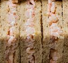

INGREDIENTS: Oatmeal Bread (Wheat Flour (Wheat Flour, Calcium Carbonate, Folic Acid, Iron, Niacin, Thiamin), Water, Oatmeal, Wheat Bran, Yeast, Salt, Wheat Gluten, Emulsifiers: Mono- and Diglycerides of Fatty Acids, Mono- and Diacetyl Tartaric Acid Esters of Mono- and Diglycerides of Fatty Acids; Malted Barley Flour, Rapeseed Oil, Flour Treatment Agent: Ascorbic Acid; Wheat Flour, Wheat Starch), Cold Water Prawns (40%) (Prawn (Pandalus borealis) (Crustaceans), Salt), Mayonnaise (10%) (Water, Rapeseed Oil, Cornflour, Spirit Vinegar, Pasteurised Egg Yolk, Concentrated Lemon Juice, Sugar, White Wine Vinegar, Salt, Mustard Seed).